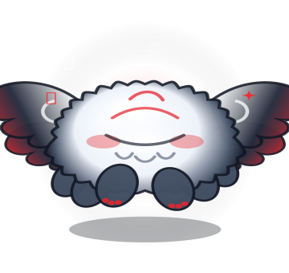
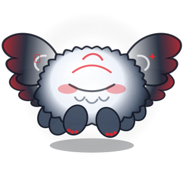
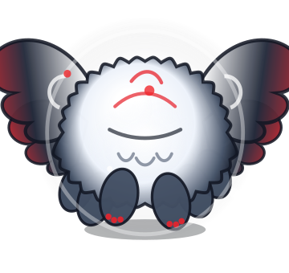
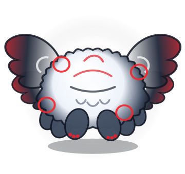
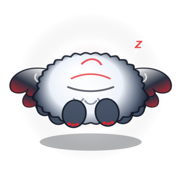

Crafted like a companion.
Engineered like a
Linux SRE.
Tchiko floats natively on your Ubuntu workspace at 60 FPS—combining a 5-tier Antigravity reasoning engine with autonomous crash repair, OpenSSH lifecycle automation, and live /proc telemetry.
k=18.0, c=0.72) from tchiko/svg_ghost_renderer.py. Middle-click me or trigger any sysadmin workflow below.
Five-tier autonomous reasoning and execution architecture
Every prompt entered into Tchiko’s floating quick-input pill or GTK3 Chat Studio is evaluated through five prioritized execution layers on a non-blocking daemon worker thread bridged via GLib.idle_add.
tchiko/*
Every subsystem built into your floating companion
From deep X.509 certificate inspection and minified JavaScript bundle patching to real-time /proc studio telemetry and bi-directional antigravity.yaml RBAC governance.
6-Step Autonomous Application & IDE Crash Doctor
Ask Tchiko “check why antigravity code ide or vscode is crashing and fix it” and he executes a complete root-cause investigation and atomic binary/bundle repair workflow automatically:
PATH, ~/.local/bin symlinks, and installation share roots.
SingletonLock symlinks & inspects Crashpad/*.dmp.
ConnectError, TLS handshake, and SIGTRAP traces from latest logs.
openssl x509 -noout -dates -checkend 0 on bundled .pem/.crt files.
.bak backups and patches main.js / extension.js TLS nodeOptions.
Antigravity 2.0 Chat, System Studio & Live Activity Feed
Single-click Tchiko to toggle the full desktop studio featuring card-based Markdown streaming, 1-click code copy, slash-command popup (/), and live /proc hardware meters.
OpenSSH Key & Config Automation
Generates ~/.ssh/id_ed25519_<host> (-a 100) for Hetzner, GitHub, GitLab, AWS, or DigitalOcean, backs up prior keys, sets strict 0700/0600/0644 permissions, auto-copies the .pub key to your X11/Wayland clipboard, and appends Host blocks to ~/.ssh/config.
Byte-Window Grep & Atomic .bak Patching
Includes 1-indexed view_file_lines(), grep_files() with an automatic byte-offset snippet fallback for single-line minified JS bundles (main.js), and patch_file_content() that snapshots a .bak backup before every edit.
Bi-Directional antigravity.yaml Sync
Switch instantaneously between Full Autonomous Mode (always-proceed) and Supervised Review Mode (request-review inline approval banners) across 6 capability domains with hard command_denylist protection.
Procedural Cairo Bézier rendering & spring-jelly physics
Every vector below is exported directly by SvgGhostRenderer.export_to_svg() in tchiko/svg_ghost_renderer.py. Click any study to load its state into the interactive 60 FPS canvas above.





Interactive operator playbook & desktop gesture matrix
Click any prompt in the playbook below to simulate its execution live in Tchiko’s desktop studio above.
Built-In Slash & Natural-Language Sysadmin Playbook
Click prompt to test ↑| Prompt / Command | Tier | Autonomous Action |
|---|---|---|
| "check why antigravity code ide is crashing and fix it" | Tier 3 | Runs 6-step Crash Doctor: symlinks, SingletonLock, logs, OpenSSL X.509 audit, and JS .bak patching. |
| /doctor | Tier 1/3 | 5-point Ubuntu health audit: /proc CPU/RAM/Disk thresholds, top processes, failed systemd units, listening sockets. |
| "create an ssh key for hetzner in OpenSSH format" | Tier 3 | Generates ~/.ssh/id_ed25519_hetzner, sets 0600/0644, backs up old keys, auto-copies .pub to clipboard. |
| "what is using port 8000" / "kill port 8000" | Tier 3 | Inspects listening sockets via ss -tulnp / lsof -i:8000 or terminates bound PIDs. |
| "inspect logs and patch the TLS config" | Tier 4/5 | Streams agy NDJSON tool events or runs 8-step ReAct loop with <view_file>, <grep>, <patch_file>. |
| "copy it" / "retry" / "where did you save it?" | Tier 2 | Resolves against config/agent_memory.json to copy last artifact, re-run last command, or display path. |
Desktop Gesture Matrix
ghost_widget.py| Input Gesture | Desktop Companion Behavior |
|---|---|
| Middle-Click (Scroll Click) | Toggles the inline Ask Tchiko... ↵ Quick Input Pill directly beneath Tchiko and grabs keyboard focus. |
| Single Left-Click | Toggles the full Antigravity 2.0 Chat & System Studio window + triggers a marshmallow boop squish impulse. |
| Left-Click + Drag | Repositions Tchiko across X11/XWayland root coordinates with velocity leg-dangle physics and saves (x, y). |
| Cursor Hover / Rubbing | Accumulates _pet_rub_energy; transitions into love state with musical chirps (♪) and warm crimson blush. |
| Scroll Wheel Up / Down | Cycles deterministically through all 10 procedural states (idle → dizzy). |
| Double / Right-Click | Opens Tchiko Settings & RBAC Permissions (⚙️) or the quick sysadmin context menu. |
Deploy Tchiko on your Ubuntu desktop in 30 seconds
Uses native system python3-gi and python3-cairo bindings for zero-overhead compositing. Run --self-test to verify all subsystems and export fresh vector SVGs.